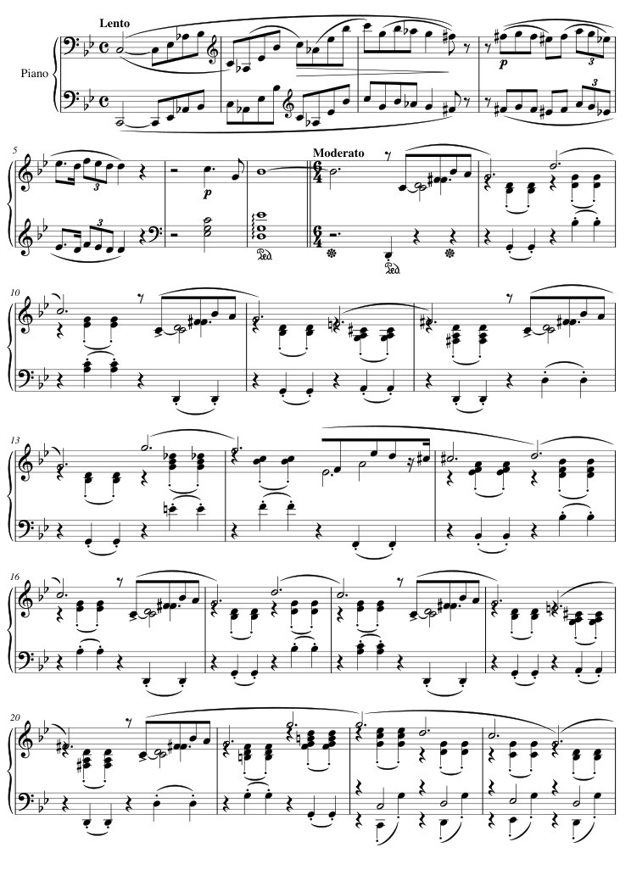
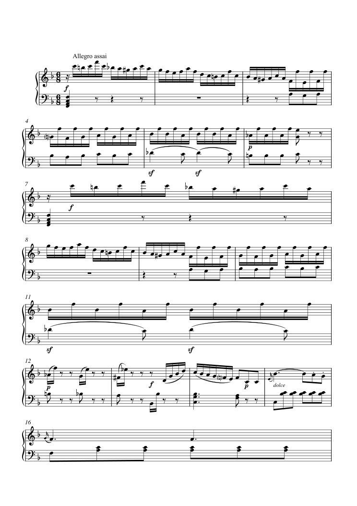
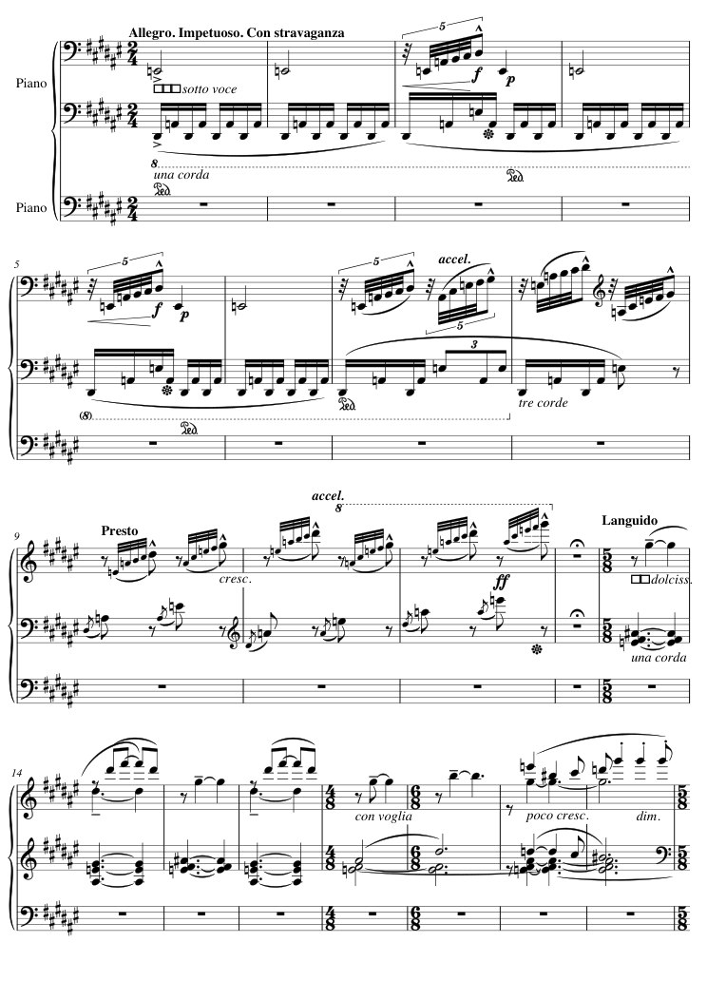
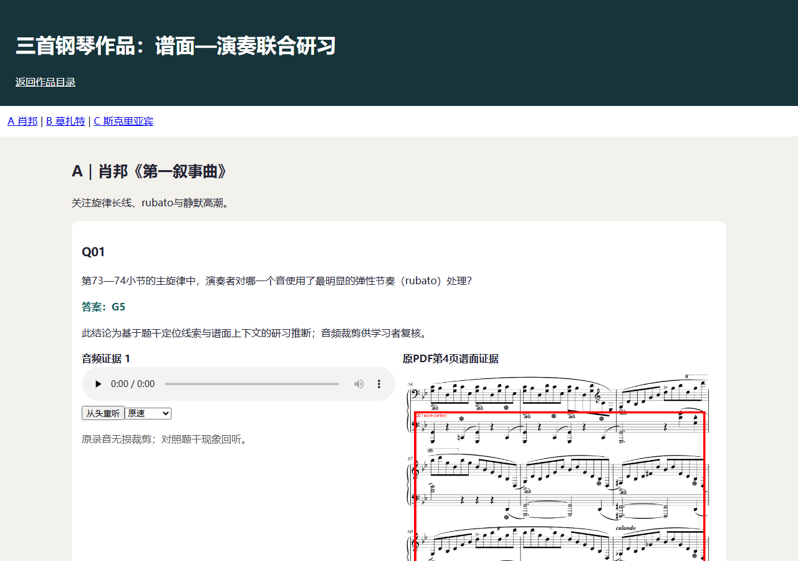
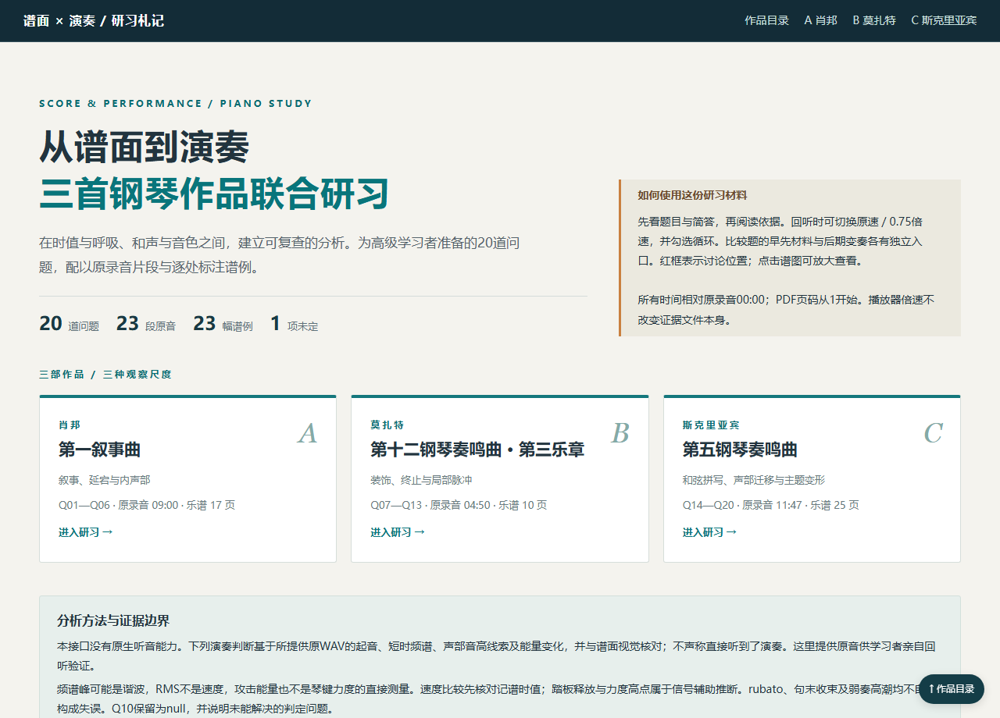

作品 A · 17 页 · 09:00
肖邦《第一叙事曲》

完整演奏试听 · MP3预览；实际受测输入为原始WAV。
阅读三部作品的完整乐谱，结合对应演奏回答20项分析问题，把结论、标注谱面和原音证据组织成可离线使用的中文教材。
演奏中的弹性节奏、力度与踏板处理不必然是错误。区分分析观察、主观解释，以及题目明确要求定位的现象。
你是一位为高级音乐学习者准备研习材料的助教。请阅读三份乐谱、聆听对应演奏，完成 QUESTIONS.zh-CN.md 中的 20 项分析，并制作一份可离线使用的中文研习网页。
| 作品 | 原始乐谱 | 原始演奏 |
|---|---|---|
| A：肖邦《第一叙事曲》 | input/A/score.pdf |
input/A/performance.wav |
| B：莫扎特《第十二钢琴奏鸣曲》第三乐章 | input/B/score.pdf |
input/B/performance.wav |
| C：斯克里亚宾《第五钢琴奏鸣曲》 | input/C/score.pdf |
input/C/performance.wav |
input/manifest.json 提供采样率、时长与页数；questions.json 是与题目清单一致的结构化版本。作品共约 25 分 37 秒，乐谱共 52 页。录音起点为 00:00；小节号依原乐谱，PDF 页码从 1 开始。
演奏中的弹性节奏、力度与踏板处理不必然是错误。请区分分析观察、主观解释和原题明确要求定位的现象，不要自行把所有偏离严格节拍的处理称为失误。
请在当前工作目录创建 submission/：
submission/
index.html
answers.json
evidence.json
assets/ # 音频片段、标注图片和页面所需资源
README.md # 本地打开方法、结构说明、未能完成的部分
答案和证据文件使用所附模板及 DELIVERY_FORMAT.md 的格式。结构化答案、网页显示的答案与解释必须一致；不能在网页正确而 JSON 留空，或在两处给出互相矛盾的结论。
explanation_zh。音名、调式与术语使用各题规定的格式，中文解释不受此限制。MM:SS 作答，向下取整到整秒。改编任务的时间判定允许相对参考时刻最多 1 秒的偏差；其他类型按题目所规定的音高、八度、顺序、数量或术语判定。NOTICE.md，请在交付网页或 README 中保留署名。内容答案与网页交付将分别验收：页面美观、字数或文件数量不能代替音乐分析正确性。
素材与分析问题来自 MuSP-Bench 的三首作品，保留原录音、原乐谱及原参考答案。原任务侧重音乐问答；本case把多道问题串成教学工作流，增加原音片段、谱面后期标记、前后对照和交互网页交付，检验答案能否落实为可复查的学习材料。

完整演奏试听 · MP3预览；实际受测输入为原始WAV。

完整演奏试听 · MP3预览；实际受测输入为原始WAV。

完整演奏试听 · MP3预览；实际受测输入为原始WAV。
实际音频均为44.1kHz、16-bit、双声道WAV；录音起点为00:00，PDF页码从1开始。输入不含转录、现成MIDI对齐或参考答案。
| 输入文件 | 数量与作用 |
|---|---|
| score.pdf + performance.wav | 三组完整乐谱与对应演奏 |
| questions.json / QUESTIONS.zh-CN.md | 20道分析题，保留中文译文及英文原题 |
| 答案与证据模板、DELIVERY_FORMAT.md | 明确简答格式、证据区间和标注坐标等字段 |
| 题号 / 作品 | 题目内容 | 简答格式 | 证据要求 |
|---|---|---|---|
| Q01 / A | 第73—74小节的主旋律中，演奏者对哪一个音使用了最明显的弹性节奏（rubato）处理？ | 音名及八度，例如 C#4。 | ≥1段原音，≥1处谱面 |
| Q02 / A | 聆听开头到第一次整体静默之前的第一个乐思。按先后顺序写出其加速／减速轮廓。 | 用 faster、slower 表示阶段，以英文逗号分隔；保留先后顺序。 | ≥1段原音，≥1处谱面 |
| Q03 / A | 从录音02:51开始的主题，在第几小节到达一种反常规的、安静的高潮？此处速度与音量均明显下降。 | 单个小节号，只写整数。 | ≥1段原音，≥1处谱面 |
| Q04 / A | 03:00稍后出现旋律 F, G, G, Eb, Eb, D, C, D, D, Bb。之后音乐继续转调：根据主要主题在新调中的再现，接下来转到什么调？ | 音级加 major 或 minor，例如 C major；解释可用中文。 | ≥1段原音，≥1处谱面 |
| Q05 / A | 01:57—02:06之间，演奏者强调了一条由连续叹息音型构成的旋律。按出现顺序写出这条旋律，直到该声部出现 F#3。 | 仅写音级，不写八度；用英文逗号分隔，保留重复音和先后顺序。 | ≥1段原音，≥0处谱面 |
| Q06 / A | 03:37—03:43之间，演奏者突出的短小中声部由哪些具体音组成？ | 音名及八度组成的有序列表，以英文逗号分隔。 | ≥1段原音，≥0处谱面 |
| Q07 / B | 录音02:56—02:57所对应的较长音符下方，谱面写着什么演奏指示？ | 写完整的意大利语／英语音乐术语，不仅写缩写。 | ≥1段原音，≥1处谱面 |
| Q08 / B | 第53小节的装饰音在这次实际演奏中从哪个音开始？ | 音名及八度。 | ≥1段原音，≥1处谱面 |
| Q09 / B | 第243小节中，右手有一个音在实际演奏里受到很强的强调，可能并非有意为之，并略微打断旋律的流动。是哪一个音？ | 仅写音级，不写八度。 | ≥1段原音，≥1处谱面 |
| Q10 / B | 如果严格保持第243小节的速度，最后一个和弦相对实际演奏将延后多少个八分音符的时值？结果向下取整。 | 非负整数，以八分音符时值为单位。 | ≥1段原音，≥1处谱面 |
| Q11 / B | 第170—180小节之间，演奏者在哪两个小节减速最明显？ | 两个小节号，按出现顺序以英文逗号分隔。 | ≥1段原音，≥1处谱面 |
| Q12 / B | 在呈示部中，第一次向本曲关系小调形成正格终止发生在什么时间？请给出该终止中导音被奏响的时刻。 | 录音绝对时间 MM:SS，向下取整到整秒。 | ≥1段原音，≥1处谱面 |
| Q13 / B | 主主题以小调形式出现，是从录音的什么时间开始的？ | 录音绝对时间 MM:SS，向下取整到整秒。 | ≥1段原音，≥0处谱面 |
| Q14 / C | 从第263小节开始的 meno vivo 段落出现了两次完整的“神秘和弦”。第一次奏响该和弦是在什么时间？ | 录音绝对时间 MM:SS，向下取整到整秒。 | ≥1段原音，≥1处谱面 |
| Q15 / C | 第219—225小节的高声部旋律音中，哪一个音被演奏得最有力度？ | 音名及八度。 | ≥1段原音，≥1处谱面 |
| Q16 / C | 录音11:17—11:28的段落，是先前哪个主题的变奏？请用该主题第一次出现时的速度／表情标记作答。 | 谱面原有的完整速度／表情术语。 | ≥2段原音，≥2处谱面 |
| Q17 / C | 录音07:57—08:41之间，演奏者在哪个小节之前松开踏板、且没有其他音持续，从而形成该区间最长的整体静默？ | 静默结束后进入的小节号，只写整数。 | ≥1段原音，≥1处谱面 |
| Q18 / C | 本曲具有较长的引子，且第一主题由六小节乐句构成。呈示部从录音的什么时间开始？ | 录音绝对时间 MM:SS，向下取整到整秒。 | ≥1段原音，≥1处谱面 |
| Q19 / C | 10:20稍后到10:30之前，某个中声部出现超过五个音的下行完整半音阶。找出其中最长的连续半音阶线条，并给出起音与终音。 | 两个音级，不写八度；先起音、后终音，以英文逗号分隔。 | ≥1段原音，≥0处谱面 |
| Q20 / C | 作品结尾使用了先前引入过的一个音乐构思。这个构思最早是在录音的什么时间引入的？ | 录音绝对时间 MM:SS，向下取整到整秒。 | ≥2段原音，≥0处谱面 |
| 模型 | 内容主分 | 通过题数 | 结构检查 | 页面功能检查 | 累计预算用时 |
|---|---|---|---|---|---|
| GPT-6 Luna | 10/100 | 2/20 | 通过 | 基础浏览器检查；自定义交互未复核 | 45.38 分钟 |
| GPT-6.1 Sol | 55/100 | 11/20 | 通过 | 桌面/手机交互通过 | 82.31 分钟 |
| DeepSeek V4.1 Flash 1017 | 15/100 | 3/20 | 通过 | 桌面/手机交互通过 | 21.32 分钟 |

33 次模型请求 · 33 次工具调用 · 45.38 分钟

79 次模型请求 · 79 次工具调用 · 82.31 分钟
93 次模型请求 · 92 次工具调用 · 21.32 分钟
本轮条件为谱面视觉＋代码音频分析，未提供原生音频输入；使用相同题包、工具与预算。单次运行结果，不代表稳定排名。完整音乐证据语义尚未独立复核，网页功能通过不增加音乐内容分。
每题独立计 0或5分，合计100分。采用冻结的答案类型归一化规则；时间题按题面允许±1秒偏差，音高、八度、有序音符、数量及术语按规定判定。内容评分不使用LLM judge；页面结构与浏览器功能另行检查。
| 题号 | 问题概述 | GPT-6 Luna | GPT-6.1 Sol | DeepSeek V4.1 Flash 1017 |
|---|---|---|---|---|
| Q01 | 第73—74小节的主旋律中，演奏者对哪一个音使用了最明显的弹性节奏（rubato）处理？ | 0/5 | 5/5 | 0/5 |
| Q02 | 聆听开头到第一次整体静默之前的第一个乐思。按先后顺序写出其加速／减速轮廓。 | 0/5 | 0/5 | 0/5 |
| Q03 | 从录音02:51开始的主题，在第几小节到达一种反常规的、安静的高潮？此处速度与音量均明显下降。 | 0/5 | 5/5 | 0/5 |
| Q04 | 03:00稍后出现旋律 F, G, G, Eb, Eb, D, C, D, D, Bb。之后音乐继续转调：根据主要主题在新调中的再现，接下来转到什么调？ | 0/5 | 5/5 | 5/5 |
| Q05 | 01:57—02:06之间，演奏者强调了一条由连续叹息音型构成的旋律。按出现顺序写出这条旋律，直到该声部出现 F#3。 | 0/5 | 5/5 | 0/5 |
| Q06 | 03:37—03:43之间，演奏者突出的短小中声部由哪些具体音组成？ | 0/5 | 0/5 | 0/5 |
| Q07 | 录音02:56—02:57所对应的较长音符下方，谱面写着什么演奏指示？ | 0/5 | 5/5 | 0/5 |
| Q08 | 第53小节的装饰音在这次实际演奏中从哪个音开始？ | 0/5 | 0/5 | 0/5 |
| Q09 | 第243小节中，右手有一个音在实际演奏里受到很强的强调，可能并非有意为之，并略微打断旋律的流动。是哪一个音？ | 0/5 | 5/5 | 0/5 |
| Q10 | 如果严格保持第243小节的速度，最后一个和弦相对实际演奏将延后多少个八分音符的时值？结果向下取整。 | 0/5 | 0/5 | 0/5 |
| Q11 | 第170—180小节之间，演奏者在哪两个小节减速最明显？ | 0/5 | 0/5 | 0/5 |
| Q12 | 在呈示部中，第一次向本曲关系小调形成正格终止发生在什么时间？请给出该终止中导音被奏响的时刻。 | 5/5 | 5/5 | 0/5 |
| Q13 | 主主题以小调形式出现，是从录音的什么时间开始的？ | 0/5 | 5/5 | 0/5 |
| Q14 | 从第263小节开始的 meno vivo 段落出现了两次完整的“神秘和弦”。第一次奏响该和弦是在什么时间？ | 0/5 | 5/5 | 0/5 |
| Q15 | 第219—225小节的高声部旋律音中，哪一个音被演奏得最有力度？ | 0/5 | 0/5 | 0/5 |
| Q16 | 录音11:17—11:28的段落，是先前哪个主题的变奏？请用该主题第一次出现时的速度／表情标记作答。 | 5/5 | 0/5 | 5/5 |
| Q17 | 录音07:57—08:41之间，演奏者在哪个小节之前松开踏板、且没有其他音持续，从而形成该区间最长的整体静默？ | 0/5 | 5/5 | 5/5 |
| Q18 | 本曲具有较长的引子，且第一主题由六小节乐句构成。呈示部从录音的什么时间开始？ | 0/5 | 5/5 | 0/5 |
| Q19 | 10:20稍后到10:30之前，某个中声部出现超过五个音的下行完整半音阶。找出其中最长的连续半音阶线条，并给出起音与终音。 | 0/5 | 0/5 | 0/5 |
| Q20 | 作品结尾使用了先前引入过的一个音乐构思。这个构思最早是在录音的什么时间引入的？ | 0/5 | 0/5 | 0/5 |
官方 typed 精确匹配分：GPT-6 Luna 10/100；GPT-6.1 Sol 50/100；DeepSeek V4.1 Flash 1017 15/100。该分数用于复现原问答判定，与内容主分分别记录。Sol的Q18答01:22、参考为1:23，符合预先固定的时间容差，因此主分比精确分高5分。
按实际调用顺序查看观察材料、分析代码、工具返回、渲染图和最终提交。可按模型、工具类型和关键词筛选；图片为对应工具实际返回图像的网页预览。
| 模型 | 工具调用 | 成功谱面渲染 | 成功音频分析 | 工具/代码报错 | 运行结束状态 |
|---|---|---|---|---|---|
| GPT-6 Luna | 33 | 3 | 0 | 6 | 调用finish结束 |
| GPT-6.1 Sol | 79 | 22 | 4 | 5 | 调用finish结束 |
| DeepSeek V4.1 Flash 1017 | 92 | 4 | 0 | 51 | 最终文本结束 |
发起3次谱面渲染请求、0次图像查看请求、0次通用音频分析请求、17次Python调用，以及1次浏览器自检请求。工具或代码报错6次，其中4次发生在参数解析阶段；具体参数类型、错误及后续调用均可在下方轨迹中查看。
本次最终通过2/20题。调用量与文件完成度分别反映取证和工程过程；答案是否正确由20项冻结内容判定单独确认。
发起22次谱面渲染请求、2次图像查看请求、4次通用音频分析请求、40次Python调用，以及2次浏览器自检请求。工具或代码报错5次，其中2次发生在参数解析阶段；具体参数类型、错误及后续调用均可在下方轨迹中查看。
本次最终通过11/20题。调用量与文件完成度分别反映取证和工程过程；答案是否正确由20项冻结内容判定单独确认。
发起4次谱面渲染请求、3次图像查看请求、0次通用音频分析请求、54次Python调用，以及7次浏览器自检请求。工具或代码报错51次，其中46次发生在参数解析阶段；具体参数类型、错误及后续调用均可在下方轨迹中查看。
本次最终通过3/20题。调用量与文件完成度分别反映取证和工程过程；答案是否正确由20项冻结内容判定单独确认。
下面按实际结构化答案与固定参考比较，说明失分发生在哪里。引用的解释和谱图来自模型原始交付，完整材料可从模型卡片打开。
作答：None
官方参考：Db4, Cb4, Bb3
突出中声部的音高及顺序不符，学习者无法据此准确分离和练习该声部。
无法仅凭混合频谱区分短中声部的具体音高与八度，留空待谱面逐音核对。
原始解释摘录 · 查看交付中的图、音与说明 ↗
作答：None
官方参考：3
未得到参考要求的匀速外推结果，量化节奏练习缺少正确依据。
缺少可靠稳定八分音符参照值，不编造延迟整数。
原始解释摘录 · 查看交付中的图、音与说明 ↗
作答：00:00
官方参考：00:07；或 0:08
最早出现的时间定位不符，回听入口不能准确呈现题目所问的首现位置。
此结论为基于题干定位线索与谱面上下文的研习推断；音频裁剪供学习者复核。
原始解释摘录 · 查看交付中的图、音与说明 ↗
| 题号 | 实际作答 | 官方参考 |
|---|---|---|
| Q01 | G5 | Ab5 |
| Q02 | slower, faster | faster, slower, faster, slower |
| Q03 | None | 80 |
| Q04 | A-flat major | A minor |
| Q05 | None | F, Eb, Eb, D, F, Eb, Eb, D, D, C, Bb, A, G, F#；或 F, Eb, Eb, D, F, Eb, Eb, D, D, C, Bb, A, G |
| Q06 | None | Db4, Cb4, Bb3 |
| Q07 | dolce | Sforzando |
| Q08 | None | Eb5 |
| Q09 | None | A |
| Q10 | None | 3 |
| Q11 | 173,178 | 176, 177；或 175, 176 |
| Q13 | 01:13 | 1:46 |
| Q14 | 08:01 | 6:28 |
| Q15 | None | Ab5 |
| Q17 | None | 325 |
| Q18 | 00:31 | 1:23 |
| Q19 | None | C, D |
| Q20 | 00:00 | 00:07；或 0:08 |
作答：Presto giocoso
官方参考：Languido
主题来源选择不符，前后对照指向了不同材料，影响对变奏关系的学习。
这不是只因同样“快”而联想主题。第251小节首次出现的 Presto giocoso，具有高音长时值目标后接更高音区短小上行—回落的轮廓；第433小节以后把它扩展为低处密集震音／重复音支撑的强烈变奏。11:17—11:28落在这段后期扩展内。对照截图中的长音与随后高位短音组，节奏外形和音程关系比表面伴奏更能说明亲缘关系。
原始解释摘录 · 查看交付中的图、音与说明 ↗
作答：D4, Db4, B3, Bb3
官方参考：Db4, Cb4, Bb3
突出中声部的音高及顺序不符，学习者无法据此准确分离和练习该声部。
这是穿过装饰与伴奏的隐含下行线，而非把右手所有快速音逐个抄录。约03:38.52 的 D4 接03:40.26的 Db4，再到03:40.96的 Cb4（实际音高 B3），最后接向 Bb3；谱面在第88—90小节把这些音分配在不同的织体位置。回答统一用实际音高 B3 表示谱写 Cb4，频谱上的相邻半音下行也与此一致。
原始解释摘录 · 查看交付中的图、音与说明 ↗
作答：None
官方参考：3
未得到参考要求的匀速外推结果，量化节奏练习缺少正确依据。
这一项保留为 null：已按谱面末尾三小节核算，但尚不能把结果可靠地转换成题目要求的“延后”的非负整数。第243小节约04:43.66起，以同小节起音估计八分音符约0.21秒，末尾实际和弦约04:47.50；当前外推得到的是匀速版本反而较早，而不是延后。可能涉及题目对基准速度／最后和弦的取点约定，不能把方向相反的差值强行取绝对值冒充答案。保留完整尾声及标注，供核查；自然的收束也不因此被称为错误。
原始解释摘录 · 查看交付中的图、音与说明 ↗
| 题号 | 实际作答 | 官方参考 |
|---|---|---|
| Q02 | faster, slower | faster, slower, faster, slower |
| Q06 | D4, Db4, B3, Bb3 | Db4, Cb4, Bb3 |
| Q08 | F5 | Eb5 |
| Q10 | None | 3 |
| Q11 | 175, 177 | 176, 177；或 175, 176 |
| Q15 | C#6 | Ab5 |
| Q16 | Presto giocoso | Languido |
| Q19 | F, G | C, D |
| Q20 | 00:02 | 00:07；或 0:08 |
Q07、Q12、Q13的解释直接依赖全曲小节数与时长的比例推算。Q12答00:52，参考00:44；Q13答01:58，参考01:46；Q14答07:04，参考06:28。平均比例未能准确对齐这些局部事件，影响了回听入口及谱面定位。Q05、Q06明确留空；Q04、Q16、Q17三题通过答案匹配。
排版目检还发现，Q16第一幅标注图内可见“Accarezzevole”，图注则称“Languido主题首次出现”。该位置与图注的对应关系仍需音乐语义复核；Q16的5分只代表结构化答案匹配通过。
作答：00:52
官方参考：00:44
作答不符合该题固定的音高、顺序、位置或术语判定，需结合原谱与原录音重新核对。
按 246 小节／4:50 的整体比例，呈示部内的 D 小调正格终止约落在 00:52，终止中导音（C#）被奏响的时刻取 00:52。该题需精确的小节—时间对齐，此答案基于比例推算，置信度低。
原始解释摘录 · 查看交付中的图、音与说明 ↗
作答：dolce
官方参考：Sforzando
作答不符合该题固定的音高、顺序、位置或术语判定，需结合原谱与原录音重新核对。
02:56—02:57 对应谱面第7页中部的抒情段落（第150—153小节附近，按全曲246小节／4:50 比例对齐），该处长音符下方写有 dolce。此答案依赖比例式的“小节—时间”对齐，未做逐音对齐，置信度低。
原始解释摘录 · 查看交付中的图、音与说明 ↗
作答：None
官方参考：Db4, Cb4, Bb3
突出中声部的音高及顺序不符，学习者无法据此准确分离和练习该声部。
无法在现有素材与时间内确定：该题要求对一段密集多声部织体中的具体音列逐音辨认，而本接口不能直接听音、只能依靠信号分析与谱面读谱；我比对了相关小节与频谱包络，但无法把每个音稳定对应到具体音高，因此结构化答案留 null，而不编造音名。
原始解释摘录 · 查看交付中的图、音与说明 ↗
| 题号 | 实际作答 | 官方参考 |
|---|---|---|
| Q01 | B♭5 | Ab5 |
| Q02 | slower, faster | faster, slower, faster, slower |
| Q03 | 94 | 80 |
| Q05 | None | F, Eb, Eb, D, F, Eb, Eb, D, D, C, Bb, A, G, F#；或 F, Eb, Eb, D, F, Eb, Eb, D, D, C, Bb, A, G |
| Q06 | None | Db4, Cb4, Bb3 |
| Q07 | dolce | Sforzando |
| Q08 | G5 | Eb5 |
| Q09 | F | A |
| Q10 | 2 | 3 |
| Q11 | 176, 178 | 176, 177；或 175, 176 |
| Q12 | 00:52 | 00:44 |
| Q13 | 01:58 | 1:46 |
| Q14 | 07:04 | 6:28 |
| Q15 | E5 | Ab5 |
| Q18 | 01:40 | 1:23 |
| Q19 | D, G# | C, D |
| Q20 | 00:00 | 00:07；或 0:08 |
| 文件 | 内容 |
|---|---|
| 题目与完整原始输入 ZIP | 实际受测题包：三份PDF、三段完整WAV、20题与交付模板。 |
| 输入逐文件 SHA256 · 模型交付部署清单 | 核对题包版本和网页部署副本，模型代码与资源字节保持原样。 |
| GPT-6 Luna 交付与评测 ZIP | 原始网页与资源、答案、证据、逐题评分、协议和可观察工具轨迹。 |
| GPT-6.1 Sol 交付与评测 ZIP | 原始网页与资源、答案、证据、逐题评分、协议和可观察工具轨迹。 |
| DeepSeek V4.1 Flash 1017 交付与评测 ZIP | 原始网页与资源、答案、证据、逐题评分、协议和可观察工具轨迹。 |
来源：Milan Liessens Dujardin、Song-Ze Yu、Kevin Miao，MuSP-Bench，2026；原数据集。固定数据版本 ebb8fdc0d0f49d427e48b15f257fa39056b5e525。录音在原数据中归属ASAP来源。原作品与演奏文件不作修改；中文题目及教学网页要求为OmniALE改编。